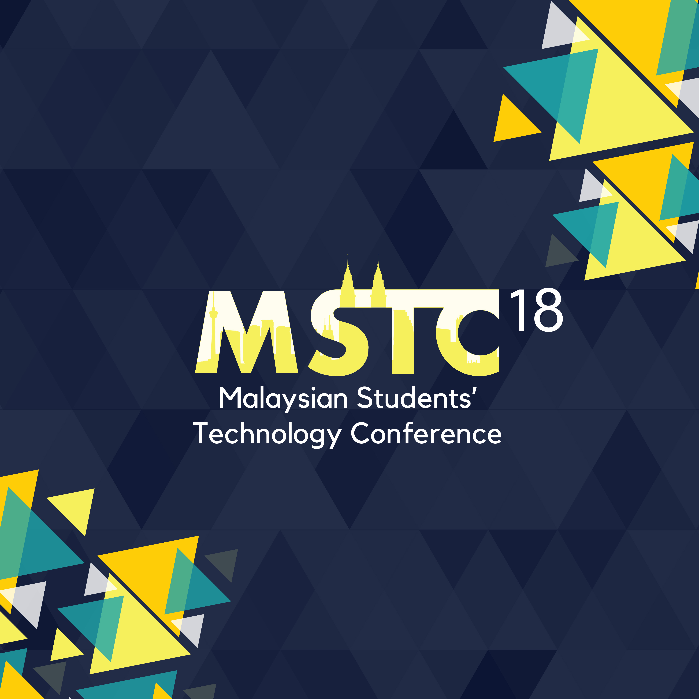

    <!--background color-->
    <script type="text/javascript">
        document.write ('<body style="background: Gainsboro; background-attachment: fixed;">')
    </script>

    <section id="conference" class="black-frame about about-container about-container-top">
      <h1>{{ page.title }}</h1>

      <div class="icon-about">
        
      </div>

      <h2 class="second">Theme</h2>

      <p>
        Breakthrough
      </p>

      <h2 class="third">Mission</h2>

      <p>
        To gather a group of motivated and passionate students through a platform; providing them with insights into current and future technological trends and allowing them to interact with industrial experts to advance their ideas while exploring learning and career opportunities in STEM.
      </p>

      <h2 class="second">Vision</h2>

      <p>
        To transform the event into an interactive conference that creates a sustainable, long-term impact on the perspectives of Malaysian youth on STEM developments in Malaysia.

      </p>
      
      <h2 class="first">Objectives</h2>

      <p>
        To connect students to industrial leaders in the field and equip students the bigger picture of learning and career opportunities in STEM.
      </p>

      <p>To inspire students to apply their knowledge in STEM and provide platform for collaboration to advance their ideas.</p>

      <p>To explore the current and future trends in technology applied in the real world<p>
    </section>

    <section id="YME" class="black-frame about about-container">
      <h1>About Young Malaysian Engineers (YME)</h1>

      <p>Young Malaysian Engineers (YME-UK) is a student organisation that aims to represent 
        and develop Malaysian engineering students in the UK. YME-UK was founded based on 
        the success of the first ever Malaysian Students’ Technology Conference (MSTC) back
        in 2016.  Coherent to the aims of the organisation, YME-UK hopes to bridge the gap 
        of opportunities between Malaysian engineering students in the UK whilst also developing 
        different soft skills for engineering via networking sessions and workshops. Ultimately, 
        YME-UK aims to make a positive impact on society and help pave the way towards a better 
        Malaysia. Since the society’s inception, YME-UK strives to assist Malaysian engineering 
        students in the best way we can so that they may become memorable contributors to the 
        society. We hope that in the future, Malaysian engineers will be known to be at the 
        forefront of implementing the latest technology for the benefit of society.</p>
    </section>

    <section id="MSTC" class="black-frame about about-container about-container-bottom">
      <h1>About Malaysian Students Technology Conference (MSTC)</h1>

      <p>Malaysian Students’ Technology Conference (MSTC) is an annyal conference for
        Malaysian students around the world who are passionate about technology. Universities
        educate students on the theory and academia that forms the foundation of knowledge, but
        this does not necessarily translate well into career paths in industry, often leaving
        students confused. MSTC hopes to be the avenue by which students are able to understand
        the relevance of their technical knowledge on their future careers and educate them
        them on the wealth of opportunities made available with their skill sets. </p>

      <p>As a continuation, the theme for this year's conference is set to demonstrate 
        the breakroughs in STEM that we have achieved so far. The significant technological change 
        currently happening is an important topic to highlight to Malaysian youths interested 
        in or currently pursuing their passions in the STEM field. We aim to be a platform to 
        stimulate critical discussions on development of science and technology in Malaysia. 
        This theme is the to "break the perception" about people's views on niche areas such
        as psychology, animation and neuroscience where the opportunities in Malaysia are 
        seen to be limited. This theme's goal is to elevate the students from their current 
        perspective to a new stage.
      </p>
    </section>